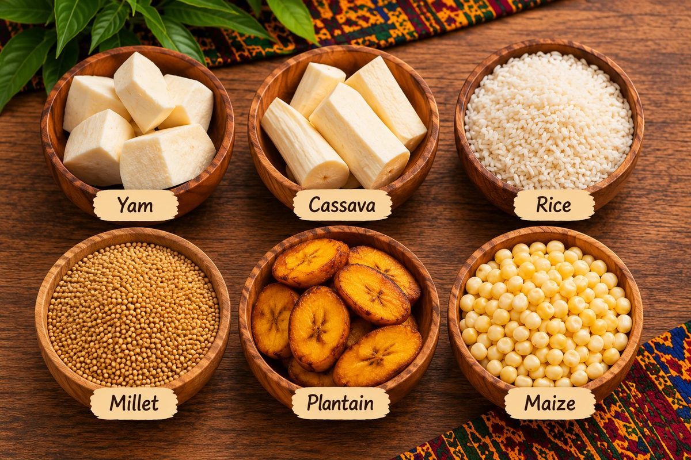

Orientation
To classify West African foods you need three clear categories: staple foods, ingredients and dishes. This page covers the first two.
Why it matters: Mixing these categories up is the most common error in the Classification Challenge.
What makes a food a staple?
A staple food is eaten regularly by a population and forms an important part of its everyday diet. Staples often provide much of a community’s energy, and they are usually widely available, grown locally or part of established food traditions.
Is this food eaten regularly as the foundation of everyday meals? If yes, it is probably a staple.
Common West African staples
- The same staple can be prepared in many ways — boiled, fried, pounded or milled — and turned into very different foods.

Rice
One of the most widely eaten staples, used in everyday and celebratory meals.
Jollof rice, fried rice, waakye, thieboudienne
Cassava
A root crop processed into different foods depending on local tradition.
Garri, eba, fufu
Yam
Especially important in Nigeria and Ghana. Boiled, fried, roasted or pounded.
Pounded yam, fried yam, yam porridge
Plantain
A starchy fruit that is usually cooked, prepared at different stages of ripeness.
Fried ripe plantain, roasted or boiled plantain
Maize (corn)
Boiled, roasted, milled into flour or processed into traditional foods.
Kenkey, banku, pap or koko
Millet & sorghum
Important cereals in the drier Sahel, milled into flour for porridges and dough-based foods.
Staple foods vary across countries and communities. Look for both shared staples and regional differences.
Ingredients: the building blocks of flavour
Staples are often the foundation of a meal. Ingredients are the individual items that add flavour, texture, nutrition and variety. They can be grouped by what they do:
| Group | Examples |
|---|---|
| Vegetables & flavouring | Tomatoes, onions, chili peppers, okra, leafy vegetables |
| Oils & fats | Red palm oil, vegetable oil, groundnut oil |
| Legumes & nuts | Groundnuts (peanuts), beans, cowpeas |
| Protein sources | Fresh, dried or smoked fish; beef, goat, chicken; shrimp and crabs |
| Herbs, spices & seasonings | Ginger, garlic, dried chili peppers, fermented seasonings, local herbs and spices |
Staple, ingredient or dish?
- Staple food
- Eaten regularly as a major part of the diet — e.g. rice, cassava, yam, maize.
- Ingredient
- An individual item used to prepare a meal or add flavour, texture or nutrition — e.g. tomatoes, onions, palm oil, peppers, groundnuts.
- Dish
- A completed preparation made by combining ingredients with particular cooking techniques — e.g. Jollof rice, waakye, groundnut soup.
Example: rice is a staple, tomatoes and onions are ingredients, and Jollof rice is a dish made with all of them.
Quick check: staple or not?
Key takeaways
- Staple foods are the regular foundation of everyday meals.
- Ingredients add flavour, texture or nutrition and can be grouped by function.
- Dishes are completed preparations that combine staples and ingredients.